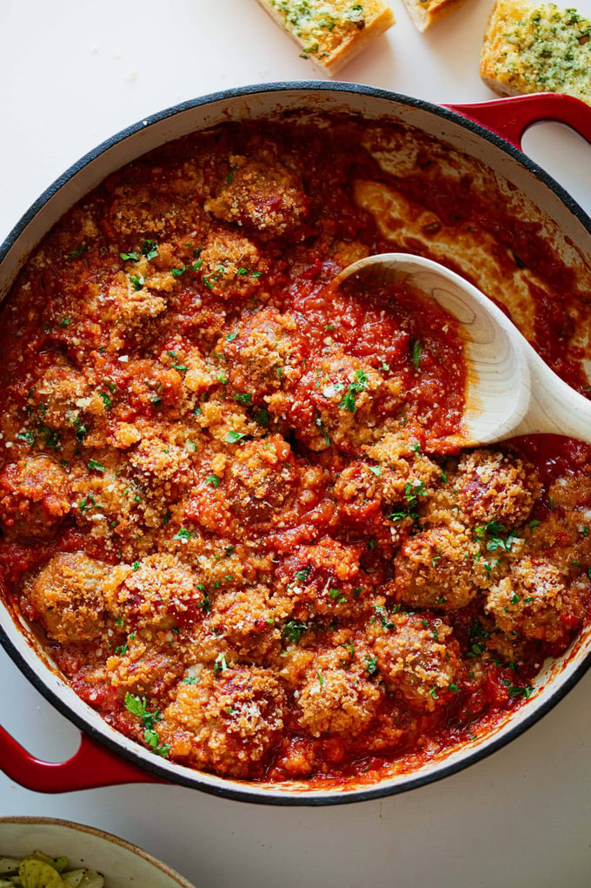

Ricotta Meatballs
recipe courtesy of Pinch of Yum

Description
"These Ricotta Meatballs are an easy and delicious family favorite! Tender, juicy homemade meatballs with a jar of good marinara and a crispy topping to finish it all off. YUM!"
Ingredients
- 1lb ground turkey
- 1/2 cup full-fat ricotta cheese
- 1/2 cup Parmesan cheese
- 1/2 cup Panko
- 1 tsp garlic powder
- 1 tsp salt
- 1/2 tsp Italian seasoning
Steps
- Prep: Preheat the oven to 400 degrees. Mix all meatball ingredients together.
- Meatballs: Roll mixture into 20-24 small meatballs. Drizzle some olive oil in the bottom of a shallow Dutch oven or oven-safe pan to prevent sticking. Put the meatballs in the pan.
- Bake: Bake for 20-25 minutes on a middle oven rack. Gently loosen them from the bottom of the pan with a spatula; they should have some nice browning.
- Sauce: Add the tomato sauce directly to the pan with the meatballs and stir to get them all coated.
- Optional Topping: Mix the 1/4 cup panko, 1/4 cup parmesan cheese, 2 teaspoons olive oil, and parsley in a small bowl. Sprinkle on top of the meatballs and sauce.
- Final bake: Return to the oven for 5-7 minutes to warm the sauce. Turn on the broiler for the last 2-3 minutes to get the crispies nice and golden (just watch it so it doesn’t burn).
- You're Done! Get into this! SO good served with a green salad and garlic bread for dunking into the sauce!